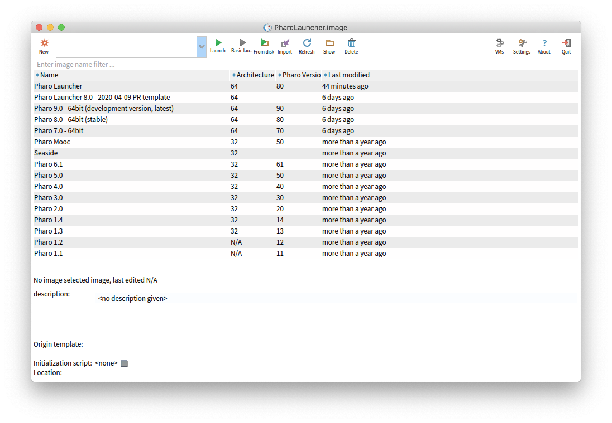

Welcome to Pharo Launcher
The fastest way to get a working Pharo environment: image (an object space with Pharo Core libraries) + virtual machine is to use Pharo Launcher. Pharo Launcher is a tool allowing you to easily download Pharo core images (Pharo stable version, Pharo development version, old Pharo versions, Pharo Mooc) and automatically get the appropriate virtual machine to run these images.

The idea behind the Pharo Launcher is that you should be able to access it very rapidly from your OS application launcher. As a result, launching any image is never more than 3 clicks away.
Please report bugs on the 'Launcher' project at https://github.com/pharo-project/pharo-launcher/issues
You can contribute to this project. All classes and most methods are commented. There are unit tests. Please contribute!
Motivations:
In the past, I (Damien Cassou) had several folders with images everywhere on my HD. Sometimes with the VM, sometimes without. Lots of image searching as you can imagine.
My HD is now much cleaner - all images are in a central place and I need only one icon/starter on the desktop to open. PharoLauncher is also a convenient tool to download specific image update versions if you want to reproduce or fix Pharo bugs.